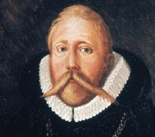
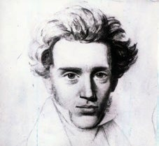
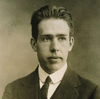
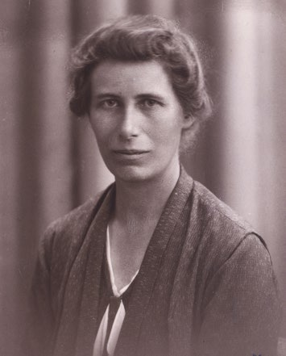
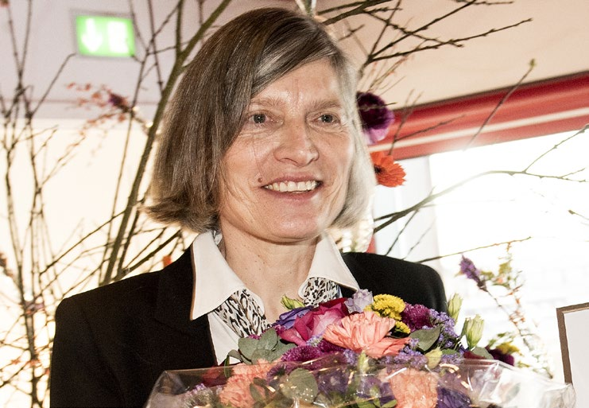

6.8 – DANSK VIDENSKAB OG TÆNKNING
sidde 211
Tænkning
Forskning og innovation er i dag en af grundforudsætningerne i dansk økonomi og dermed dansk velfærd. Dansk forskning foregår i vid udstrækning ved de danske universiteter, men der forskes også på for eksempel universitetshospi taler, museer, biblioteker og arkiver. Herudover foregår meget forskning i det private erhvervsliv. Særligt inden for medicin, biokemi og teknologi er Danmark internationalt kendt for sin forskning.
Dansk forskning på internationalt niveau har rødder langt tilbage i tiden. Flere danske videnskabsmænd har i tidens løb været med til at præge den internatio nale videnskabelige udvikling.
En af de første danske videnskabsmænd var astronomen Tycho Brahe (15461601), en skånsk adelsmand, som i 1559 kom til København for at studere på universitetet. Han var en matema tisk begavelse, konstruerede astro nomiske redskaber og foretog den indtil da mest præcise kortlægning af stjernehimlen. En af Tycho Brahes store bedrifter var at opdage en ny stjerne, Nova Stella, i stjernebilledet Cassiopeia. Tycho Brahes observati oner fik ikke mindst betydning, fordi den verdensberømte tyske astronom Johannes Kepler (1571-1630) brugte dem til at udforme sine banebrydende love om, hvordan planeterne bevæger sig omkring solen. Tycho Brahe.
Tycho Brahe.
Niels Steensen (1638-86) bidrog også til videnskaben i 1600-tallet. Ligesom Tycho Brahe anerkendte han ikke de vedtagne forklaringer, men lagde vægt på sine egne observationer. Niels Steensen var uddannet læge og rejste til Nederlandene, hvor han gjorde vigtige opdagelser inden for anatomi, det vil sige kroppens opbygning. Blandt andet var han den første til at vise, hvordan vi græder, og videre at hjertet er en muskel og ikke, som man hidtil ofte troede, hjemsted for sjæl og følelser.
Astronomen og fysikeren Ole Rømer (1644-1710) gjorde en vigtig videnskabelig opdagelse, da han i 1676 fandt ud af, at lyset havde ”en tøven”, det vil sige, at det ikke udbreder sig med det samme, men bevæger sig med en given hastighed fra kilde til modtager. Senere beskrev han nye metoder til at måle vægt og afstand. Han gjorde også forarbejdet til at få indført den nuværende (gregorianske) kalender i Danmark i år 1700.
Læremateriale Til Indfødsretsprøven

sidde 212
Frem til begyndelsen af 1700-tallet vidste man ikke, om Asien og Nordamerika var landfast med hinanden. For at udforske dette spørgsmål udsendte den russiske zar (kejser) Peter den Store i 1725 en ekspedition, som blev ledet af den danske søofficer og opdagelsesrejsende Vitus Bering (1681-1741). I 1728 lykkedes det Vitus Berings ekspedition at sejle op gennem det stræde, som adskiller Sibirien og Alaska, og dermed påvise, at Asien og Nordamerika er adskilt af vand. Nogle år senere vendte Vitus Bering tilbage som leder af en ny og endnu større ekspe dition, der skulle kortlægge Alaskas kyst. På vej hjem strandede ekspeditionen på en lille øde ø ud fra Ruslands østkyst, hvor den måtte overvintre i ekstrem kulde og uden træ til opvarmning. Mange døde, herunder Vitus Bering selv. Han er begravet på øen, som i dag bærer hans navn, Bering Øen, ligesom havet, den ligger i, hedder Beringhavet, og det stræde, der adskiller Sibirien og Alaska, hedder Beringstrædet.
I 1820 opdagede fysikeren H. C. Ørsted (1777-1851), at elektrisk strøm frem kalder magnetisme, den såkaldte elektromagnetisme. En sammenhæng mellem elektricitet og magnetisme var allerede blevet beskrevet af den italienske filosof Romagnosi i 1802, men Ørsteds arbejde var mere dybtgående og vandt udbredelse i videnskabelige kredse. Opdagelsen af elektromagnetisme lagde grunden til den teknologiske brug af elektricitet i samfund og produktion. Det var endvidere hans ambition at gøre naturvidenskaben tilgængelig og forståelig for en større del af befolkningen. Blandt andet gjorde han en indsats for at give videnskabelige begreber og betegnelser danske ord. For eksempel fandt han på ordene ilt og brint i stedet for fremmedordene oxygen og hydrogen.
Danmark har også markeret sig internati onalt inden for filosofien. Det skyldes først og fremmest Søren Kierkegaard (1813-55). I sine 42 leveår nåede han at skrive en række betydningsfulde værker inden for filosofi, teologi, psykologi og digtning. Enten – Eller fra 1843 er et af hans vigtigste værker. Søren Kierkegaard anses som grundlægger af den eksistentialistiske filosofi, som antager, at ethvert menneske bliver den, det er, gennem de valg, det træffer.
I midten af 1800-tallet blev ideer om kvinders frigørelse og ligestilling mellem kønnene formuleret af forfatteren, Mathilde Fibiger (1830-1872), der udgav brevromanen, Clara Raphael. Tolv Breve i 1851. Bogen blev anledning til en omfattende strid blandt forfattere, kunstnere og politikere om kvinders rolle i samfundet, og hun inspirerede den organiserede kvindebevægelse, som voksede frem fra 1870’erne. Modsat datidens idealer om ægteskab giftede Matilde Fibiger sig aldrig men blev ansat som telegraf ved Den Danske Statstelegraf som Danmarks første kvindelige embedsmand.Søren Kierkegaard.
Søren Kierkegaard.
Læremateriale Til Indfødsretsprøven

sidde 213
Dansk Videnskab I Nyere Tid
Den dansk-grønlandske polarforsker Knud Rasmussen (1879-1933) har haft stor betydning for udforskningen af Grønland og andre arktiske områder. På sine i alt syv ekspeditioner, de såkaldte Thule-ekspeditioner (1912-33), kortlagde han områdernes geografi, indsamlede tusindvis af genstande (for eksempel jagtredskaber, smykker og pelse) og en omfattende viden om inuitterne (en række arktiske folkeslag). Af særlig betydning regnes hans femte og største ekspedition (1921-24), hvor han rejste på hundeslæde 18.000 km fra Grønland gennem det nordlige Canada, Alaska og videre over det frosne Beringstræde til det østlige Sibirien. På sin lange rejse udforskede han flere inuitbosættelser og fik således blandt andet påvist, at der på tværs af meget store afstande findes en fælles kultur, mytologi og traditioner blandt forskellige inuitstammer.
I det 20. århundrede opnåede den danske fysiker Niels Bohr (1885-1962) international berømmelse. Som ung opstillede han en model for atomers opbygning. For den fik han i 1922 Nobelprisen i fysik. Hans vigtigste videnskabelige opdagelse var dog inden for den såkaldte kvantemekanik, hvor Niels Bohr arbejdede sammen med andre førende internationale forskere. Niels Bohr deltog aktivt i den politiske debat om atomenergi og atomvåben, som hans forskning havde gjort det muligt at udvikle.Niels Bohr. Niels Bohr.Inge Lehmann. Foto: Ritzau Scanpix.
Inge Lehmann. Foto: Ritzau Scanpix.
Seismologen og geofysikeren Inge Lehmann (1888-1993) påviste i en artikel i 1936 via observationer af jordskælv på New Zealand, at Jorden har en indre kerne. Hun fik succes som forsker i USA, og hendes studier blev brugt af det amerikanske militær til at udregne sprængkraften ved prøvesprængninger af sovjetiske atombomber under Den Kolde Krig.
I 1997 modtog den danske læge og videnskabsmand Jens Christian Skou (1918-2018) Nobelprisen i kemi for sin opdagelse af den såkaldte natrium-ka liumpumpe, som pumper de kemiske stoffer natrium og kalium henholdsvis ud og ind af menneskekroppens celler.
Læremateriale Til Indfødsretsprøven


sidde 214
Fejl i natrium-kaliumpumpen fører til hjerte- og nervesygdomme. Jens Christian Skou var professor ved Aarhus Universitet, og der gik 40 år, fra han skrev sin første artikel om sin opdagelse, til han modtog Nobelprisen.
Inden for fysikken har Lene Vestergaard Hau (født 1959) markeret sig interna tionalt. Lene Vestergaard Hau blev for alvor kendt i offentligheden, da hun i 1999 nedsatte lysets udbredelseshastighed. I 2001 formåede hun at bremse en lysimpuls fuldstændigt. Lene Vestergaard Hau er professor ved Harvard University i USA.Lene Vestergaar
Lene Vestergaard Hau. Foto: Linda Kastrup/Ritzau Scanpix.
Morten Meldal (født 1954), som er professor ved Københavns Universitet, fik sammen med to amerikanske forskere Nobelprisen i kemi i 2022 for at have lagt grunden til den såkaldte klik-kemi. Med klik-kemien skaber man nye mole kyler med færre byggesten og dermed færre kemiske reaktioner end de natur lige. Klik-kemi kaldes også ’molekylær LEGO’, som kan forbinde molekyler, uden molekylerne påvirker hinanden. Således kan man for eksempel hurtigere teste og fremstille ny medicin.
Læremateriale Til Indfødsretsprøven

Fonte: Læremateriale til Indfødsretsprøven, SIRI.